Das Arbeitsschutzgesetz ([1], § 4) stellt grundlegende Forderungen, die bei der Festlegung der Arbeitsschutzmaßnahmen umgesetzt werden müssen:
Die Umsetzung dieser Vorgaben bei der Sicherung von Arbeitsstellen im Gleisbereich führt zu einer Rangfolge der Sicherungsverfahren, die im Rahmen der Sicherungsplanung zu berücksichtigen ist. Die Entscheidung über das Sicherungsverfahren trifft die für den Bahnbetrieb zuständige Stelle (BzS) mit einer Gefährdungsbeurteilung anhand der Kriterien „technische und organisatorische Machbarkeit“ und „sicherheitstechnische Rechtfertigung“ auf der Grundlage der Angaben des Unternehmers, der im Gleisbereich arbeiten möchte. Nach Festlegung des Sicherungsverfahrens durch die BzS plant i. d. R. das Sicherungsunternehmen die Sicherungsmaßnahmen im Detail und führt sie durch.
Die Sicherheitsmaßnahmen gegen elektrische Gefährdungen auf elektrisch betriebenen Bahnen werden von der BzS sinngemäß geplant und festgelegt, siehe Kap. 4.
Die Sperrung des Arbeitsgleises (Gefährdung durch Fahrten im gesperrten Gleis vgl. Kap. 10) hat i. S. d. Maßnahmenrangfolge des Arbeitsschutzgesetzes Priorität und soll auch bei Arbeiten mit handtragbaren Maschinen und Geräten durchgeführt werden. Der Verzicht auf die Sperrung des Arbeitsgleises bedeutet „Räumung nach Warnung“ und damit ein in höchstem Maße verhaltensabhängiges Verfahren. Fehlverhalten von Sicherungsposten (z. B. nicht oder verspätet gegebene Warnung) oder Arbeitskräften (z. B. nicht fristgerechte Räumung) führen im nicht gesperrten Arbeitsgleis fast zwangsläufig zum Unfall. Die BzS darf auf die Sperrung des Arbeitsgleises nur dann verzichten, wenn triftige Gründe vorliegen wie z. B. eine unvertretbar große Einschränkung des Bahnbetriebs. Arbeiten im nicht gesperrten Gleis sind also nur der Ausnahmefall.
Die Entscheidung, ob das Arbeitsgleis gesperrt werden muss, ist anhand einer Gefährdungsbeurteilung zu treffen. Dabei sind z. B. folgende Aspekte zu berücksichtigen:
Für den Einsatz von Baumaschinen, Fahrzeugen, Kränen und Geräten muss das Arbeitsgleis bei der DB gesperrt werden (DB: Ril 824.0101 [29]). Wenn bei anderen Infrastrukturbetreibern eine solche Regelung nicht besteht, wird empfohlen, das Arbeitsgleis zu sperren, wenn die Räumzeit 5 sec überschreitet oder wenn handgeführte Maschinen eingesetzt werden, die von einem Beschäftigten alleine nicht getragen werden können oder am Gleisoberbau befestigt werden oder in den Gleisoberbau eingreifen, siehe Anhang 8 und [23].
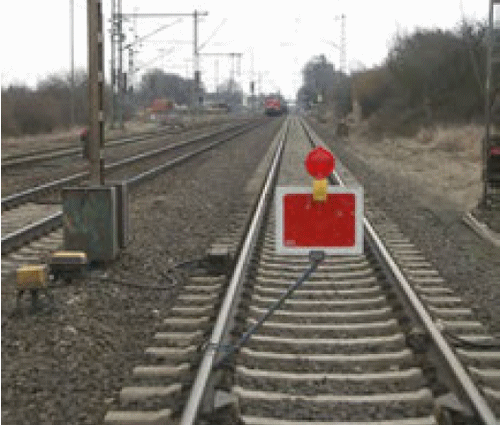
| Abb. 2-1: | Kennzeichnung einer Gleisstelle, die vorübergehend nicht befahren werden darf, durch Wärterhaltscheibe. |
Bei der DB werden zwei Arten von Gleissperrungen unterschieden:
Für Sperrungen aus „technischen Gründen“ und in bestimmten Fällen für Sperrungen aus Unfallverhütungsgründen ist bei der DB eine Betra (Betriebs- und Bauanweisung) bzw. eine „betriebliche Anordnung“ erforderlich, die bis zu 6 Wochen vorher bei den zuständigen Bahnstellen beantragt werden muss. Unter bestimmten Umständen darf auf die Erarbeitung einer betrieblichen Anordnung verzichtet werden.
Für Einrichtung und Aufhebung einer Gleissperrung sind in den Gesprächen mit dem zuständigen Fahrdienstleiter, der die Sperrung durchführt, vorgeschriebene Wortlaute zu verwenden. Die Gespräche sind durch Orts- und Zeitbezug verbindlich. Betriebswichtige Gespräche sind vom Fahrdienstleiter (z. B. Zugmeldebuch) und vom Verantwortlichen an der Arbeitsstelle (Uv-Berechtigter wie z. B. Technisch Berechtigter) zu dokumentieren (DB: Modul 132.0118 [25], Kap. 4). Dem Verantwortlichen des Bauunternehmens (Arbeitsaufsicht) wird empfohlen, die Gespräche ebenfalls zu dokumentieren.
Von diesen Festlegungen abweichende, nicht regelkonforme Absprachen zwischen Beschäftigten an der Arbeitsstelle und Fahrdienstleiter über eine Information „wenn eine Fahrt kommt“ sind keine Gleissperrungen, aus verschiedenen Gründen unsicher und deshalb als Sicherungsmaßnahme nicht gestattet.
Die Feste Absperrung (FA) schützt die Beschäftigten bei Arbeiten im Gleisbereich vor unbeabsichtigtem Hineingeraten in den Gleisbereich des Nachbargleises bzw. des Betriebsgleises neben dem Arbeitsbereich. Bei der Entscheidung und bei der Einsatzplanung für eine FA als Sicherungsmaßnahme müssen das Arbeitsverfahren, der Bauablauf, die Risikobewertung, die Anforderungen des Bahnbetriebs und die örtlichen Bedingungen berücksichtigt werden.
Der Unternehmer, der Arbeiten im Gleisbereich auszuführen hat, sollte die erforderliche Arbeitsbreite sorgfältig ermitteln und der für den Bahnbetrieb zuständigen Stelle melden. Diese entscheidet auf Grundlage der Kriterien „technische Möglichkeit“ und „sicherheitstechnische Rechtfertigung“, ob eine FA eingesetzt wird und welche betrieblichen Maßnahmen dafür erforderlich sind.
Bei Arbeiten im Gleisbereich müssen zum Schutz vor den Gefahren des Bahnbetriebs durch die für den Bahnbetrieb zuständige Stelle (BzS) gemäß [1], [14] und [15] vorrangig organisatorische und technische Sicherungsmaßnahmen festgelegt werden, die das Risiko durch menschliches Fehlverhalten soweit wie technisch möglich und sicherheitstechnisch gerechtfertigt verringern. Die DB setzt diese Forderungen mit dem Verfahren zur Auswahl der Sicherungsmaßnahme [25] um.
Durch räumlich trennende kollektiv wirkende Schutzeinrichtungen, wie z. B. FA, die zwischen gesperrtem Arbeitsgleis und Nachbargleis oder zwischen Arbeitsbereich und benachbartem Betriebsgleis montiert sind, wird das unbeabsichtigte Hineingeraten der Arbeitskräfte in den Gleisbereich ausgeschlossen. Dieser setzt sich bei der DB im Regelfall aus dem Fahrbereich der Schienenfahrzeuge und – wegen der aerodynamischen Wirkung – aus einem zusätzlichen geschwindigkeitsabhängigen Bereich zusammen.
Stand der Technik sind vom Bahnbetreiber zugelassene Systeme, die mit geringem Montageaufwand am Schienenfuß angeschlossen werden. Wenn neben Betriebsgleisen gearbeitet werden muss, ist die FA i. S. d. Forderungen des Arbeitsschutzgesetzes nach der Gleissperrung die wirksamste Schutzmaßnahme, da Mensch und Gefahr getrennt werden. Neben einer wesentlichen Erhöhung der Sicherheit kann sich – abhängig von der Baustellendauer – durch eine FA ein bedeutender Beitrag zur Senkung der Sicherungskosten ergeben. Wenn mit FA gesichert wird, erfolgt im Regelfall keine Warnung vor Fahrten im Nachbargleis.
Einzelne kurzzeitige Arbeiten im Nachbargleis sind kein Ausschlusskriterium für den Einsatz einer FA für die gesamte Baumaßnahme. Für solche Arbeiten sind zusätzliche Sicherungsmaßnahmen erforderlich, wie z. B. eine kurzzeitige Sperrung des Nachbargleises (DB: Uv-Sperrung, d. h. Sperrung aus Unfallverhütungsgründen).
Die Anforderungen an FA sind in [16], Abschnitt 5.8 festgelegt. Sichtbare Abgrenzungen (z. B. Leinen, Ketten) sind keine eigenständige Sicherungsmaßnahme, sollen aber angewandt werden, um den Beginn des Gleisbereichs für die Beschäftigten sichtbar zu machen [16].
Bei ausreichendem Platz können (z. B. bei Ingenieurbauwerken neben Gleisanlagen) auch fest verankerte Bauzaunelemente eingesetzt werden, Abb. 2-11. Diese müssen standsicher sein (Druck- und Sogkräfte der Zugfahrten), dürfen nicht in den Gleisbereich hineinragen und sind auf elektrifizierten Strecken nach Maßgabe der für den Bahnbetrieb zuständigen Stelle mit der Bahnerde bzw. mit dem Rückleiter zu verbinden (Oberleitungs- und Stromabnehmerbereich – bisher Rissbereich der Fahrleitung – vgl. Abb. 4-7).
Bei der Entscheidung der BzS, ob eine Arbeitsstelle mit am Schienenfuß montierter FA gesichert wird, sind insbesondere die im Folgenden genannten Faktoren zu berücksichtigen.
Für die Entscheidung, ob eine FA technisch möglich ist, sind die erforderliche Breite des Arbeitsbereichs und der Gleisabstand maßgebend, Abb. 2-2. Bei der DB wird die Arbeitsbreite durch den Bauunternehmer auf Seite 1 des Sicherungsplans angegeben. In der bisherigen Fassung des Moduls 132.0118 war diese Angabe in der zur Arbeitsstelle geforderten Skizze zu machen [25], in der Fassung des Moduls 132.0118 ab 6/2012 wird die Arbeitsbreite zusätzlich explizit abgefragt. In Sonderfällen, z. B. auf Brücken, kann es möglich sein, dass die Montage einer FA technisch bedingt ausgeschlossen ist.
Die Entscheidung über die Art der Sicherungsmaßnahme trifft die BzS. Für die Angabe der Arbeitsbreite an die BzS sollte der Bauunternehmer sehr genau prüfen, welche Arbeitsbreite erforderlich ist und das Arbeitsverfahren wenn möglich so planen, dass eine FA eingesetzt werden kann. Damit wird die bei nicht gesperrtem Nachbargleis höchstmögliche Stufe in der Hierarchie der Sicherungsverfahren gemäß [25] erreicht. Gleichzeitig wird durch die FA ein wesentlicher Beitrag zur Senkung der Sicherungskosten und zur Erhöhung der Produktivität der Beschäftigten geleistet (Arbeiten unter Schutz durch die FA). Bei einer Verbundausschreibung (Bauleistung und Sicherungsleistung) erhöht das die Chance für das Bauunternehmen zum Gewinn der Ausschreibung.
Weichen im Bereich der Baustelle sind kein Ausschlusskriterium für die Sicherung mit FA. Die FA-Halterung umfasst den Schienenfuß, hindert die Weichenzunge aber nicht an ihrer Bewegung (Abb. 2-8). Wenn die Halterungen der FA im Bereich von Gleiswechseln nicht angebracht werden können, sind für diese Bereiche separate Sicherungsmaßnahmen vorzusehen (z. B. sichtbare Abgrenzung zur Kenntlichmachung von Unterbrechungen der FA und Einsatz von Absperrposten).
Beim Einsatz von Fließbandmaschinen, das sind Bettungsreinigungsmaschinen, Planumsverbesserungsmaschinen und Gleisumbauzüge, kann eine FA erst ab einem Gleisabstand von 5 m eingesetzt werden [25], [46].
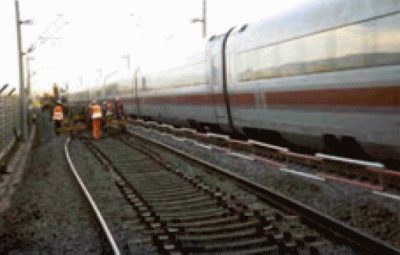
| Abb. 2-2: | Am Schienenfuß montierte Feste Absperrung zwischen Arbeitsbereich und Betriebsgleis bei 4,7 m Gleisabstand. |
Für die Entscheidung, ob die FA sicherheitstechnisch gerechtfertigt ist, ist der Umfang des zusätzlichen Aufenthalts im Gleisbereich für Montage und Demontage der FA (DB: z. B. 2 bis 4 h je 100 m FA gemäß 132.0118A01 [25]) mit dem Umfang der Arbeiten zu vergleichen, die im Schutz der FA ausgeführt werden sollen. Wenn eine FA technisch möglich und sicherheitstechnisch gerechtfertigt ist, muss sie gemäß [1], [14], [15] und [25] eingesetzt werden. Zum Beispiel dürfen umfangreiche Tiefbauarbeiten neben einem Betriebsgleis wie in Abb. 2-10 ohne Sicherung durch eine FA nicht ausgeführt werden.
Wenn die FA unter Gleissperrung montiert werden kann, entsteht kein Zusatzrisiko für Montage/Demontage und der Einsatz der FA ist dann grundsätzlich im sicherheitstechnischen Sinn gerechtfertigt. Wenn unterhalb der Schiene kein Schotter beseitigt werden muss, bestehen bei FA-Systemen mit Halterungen, die zwischen Oberkante Schotter und Schienenfuß hindurch geschoben werden, sehr geringe Montagezeiten, ebenso gilt dies bei FA-Systemen mit magnetischen Halterungen, die derzeit im Zulassungsverfahren sind.
Im Regelfall wird die FA an der Grenze des Gefahrenbereichs des Nachbargleises montiert. Gemäß GUV-R 2150 [16] darf bei der DB der Gleisbereich bei Einsatz einer FA um 20 cm reduziert werden. Bei der DB freigegebene FA werden abhängig von der Geschwindigkeit im Nachbargleis in Abständen von 1,9 m bis 2,3 m (Rastermaß: 0,1 m) von der Gleisachse des Nachbargleises entfernt angebracht. Der geringste zulässige Abstand muss sicherstellen, dass die Beschäftigten nicht näher als 1,90 m an die Gleisachse des Nachbargleises herantreten können (DB: 132.0118A06 [25]).
Die FA wird im Bereich A des Regellichtraumprofils montiert, Abb. 2-3. Die FA darf nicht in den Bereich B des Regellichtraumprofils einragen. Am Schienenfuß montierte FA erreichen eine max. Höhe von 76 cm über Schienenoberkante (SO) des Nachbargleises. Schienenfahrzeuge dürfen dann im Bereich bis 76 cm über SO die große Grenzlinie gemäß EBO § 9 Anlage 1 [7] beanspruchen.
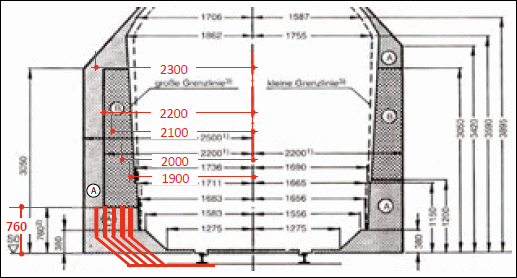
| Abb. 2-3: | Die Feste Absperrung wird im Regelfall im Bereich A des Regellichtraumprofils [7] montiert. In den Bereich B darf sie nicht einragen. |
Wird die FA vor Arbeitsbeginn im Mittelkern zwischen Nachbargleis und späterem Arbeitsgleis installiert, wird sie im Regelfall mittig zwischen den Gleisen aufgebaut.
Bei Montage der FA im Mittelkern sind folgende Punkte zusätzlich zu beachten:
Um eine Arbeitsstelle mit der hochwertigen Sicherungsmaßnahme FA sichern zu können, muss falls notwendig eine Langsamfahrstelle (La-Stelle) eingerichtet werden:
Bei der DB sind feste Gegenstände wie z. B. die FA, die – auch nur vorübergehend – in den Raum für die Engstellendokumentation eingebracht werden, als Veränderung der Engstellendokumentation anzuzeigen (Verfahren mit Sofortmeldung gemäß Ril 458.0108 [28]). Die angezeigte Änderung ist dann bei der Prüfung der Beförderungsbedingungen zur Durchführung außergewöhnlicher Transporte zu berücksichtigen.
Das Ausweisen der FA als Engstelle im Raum für die Engstellendokumentation kann ggf. zum Ausschluss von bestimmten Lü-Transporten führen. Dabei ist zu beachten, dass nicht alle Lü mit einer FA in Konflikt kommen. Eine FA kann nur dann zum Ausschluss von Lü-Transporten führen, wenn diese im Bereich unterhalb 76 cm über SO die große Grenzlinie nach EBO § 9 Anlage 1 nicht einhalten (dies können z. B. seltene Transporte von Großtransformatoren sein).
Der Raum für die Engstellendokumentation der DB dient dem Nachweis darin enthaltener fester Gegenstände wie z. B. der FA, die der Durchführung von überbreiten Transporten ggf. entgegenstehen. Nur dann, wenn eine FA in dem in Abb. 2-4 gelb gekennzeichneten Raum angeordnet wird (der Raum hat einen Querschnitt von b/h = 500/390 mm, reicht in der Breite von 1700 mm bis 2200 mm ab Nachbargleisachse und reicht in der Höhe von 400 bis 790 mm über SO), muss sie als vorübergehend in den Raum für die Engstellendokumentation einzubringende Engstelle angezeigt werden, da sie überbreiten Transporten mit in diesen Bereich auskragender Ladung entgegenstehen würde.
Um eine FA im o. b. Raum der Engstellendokumentation zu ermöglichen (Abb. 2-4, gelb gekennzeichneter Raum), müssen die Sendungen Lü-Cäsar bzw. Lü-Dora ausgeschlossen werden, die diesen Raum beanspruchen (DB: Modul 132.0118A01, A06 [25], Abb. 2-4 und 2-6).
Es kann auch sicherheitstechnisch gerechtfertigt sein, die FA für einzelne Lü-Sendungen, die nicht ausgeschlossen werden, ab- und wieder aufzubauen. Bei FA-Systemen mit teleskopierbaren Halterungen kann es wegen des sehr geringen Zeitaufwands für Aus- und Einteleskopieren (deutlich kleiner als 2 bis 4 h je 100 m FA, vgl. RIMINI-Verfahren DB: Modul 132.0118A01 [25]) gerechtfertigt sein, die FA auch für einzelne Lü-Sendungen auf die erforderliche Ausstellweite zu bringen und nach Passieren der Lü die ursprüngliche Ausstellweite wieder herzustellen.
Wenn Lü-Cäsar bzw. Lü-Dora während der Arbeitszeit nicht ausgeschlossen werden können und die Ladung über die FA hinaus in den Arbeitsbereich hineinragt, sind zusätzliche Sicherungsmaßnahmen erforderlich: Im Regelfall werden Lü gemäß Festlegung in der Betra vom Fahrdienstleiter an den Technisch Berechtigten gemäß Betra Abschnitt 4.2 auf der Baustelle gemeldet, der vor Zulassung der Lü die bei Maschineneinsatz notwendigen Sicherungsmaßnahmen durchführen lässt (z. B. Zweiwegebagger eingegleist und Oberwagen parallel zum Unterwagen für Lü-Cäsar, vgl. Abb. 2-6, Abb. 2-7). Für das Personal sind zusätzliche Sicherungsmaßnahmen erforderlich (z. B. Warnung durch Sicherungsposten oder automatisches Warnsystem und Räumen des Arbeitsgleises).
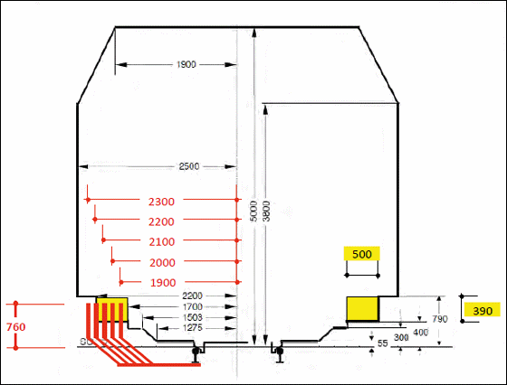
| Abb. 2-4: | Raum für die Engstellendokumentation [28] mit Anordnung der Festen Absperrung in den Rastermaßen 1,9 … 2,3 m von Achse Nachbargleis. Feste Absperrungen im gelb gekennzeichneten Bereich sind als Veränderung im Raum für die Engstellendokumentation anzuzeigen. |
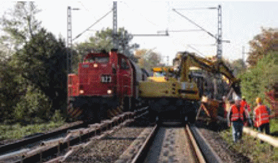
| Abb. 2-5: | Einsatz einer Festen Absperrung im Mittelkern bei 4 m Gleisabstand (80 km/h im Nachbargleis, Lü während der Arbeiten ausgeschlossen). |
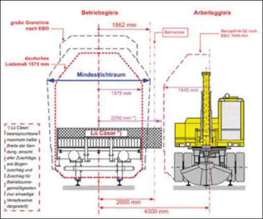
| Abb. 2-6: | Lü-Sendungen Cäsar, die das Lademaß /die Grenzlinie erst oberhalb SO + 790 mm seitlich überragen, können die Feste Absperrung problemlos passieren. Der Zweiwegebagger muss vor Zulassung der Lü-Sendung in Grundstellung gebracht werden (Gleisabstand 4 m, Abb. erstellt von J. Forstmeyer [47]). Wenn die Ladung über die Feste Absperrung in den Arbeitsbereich auskragt, sind für die Beschäftigten zusätzliche Sicherungsmaßnahmen erforderlich. |
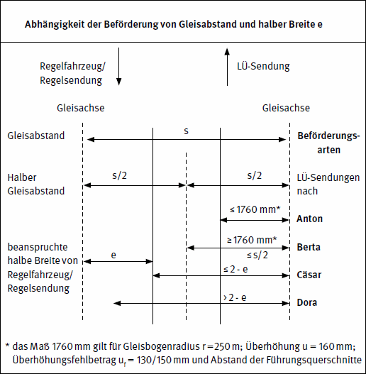
| Abb. 2-7: | Arten der Sendungen mit Lademaßüberschreitung [28]. |
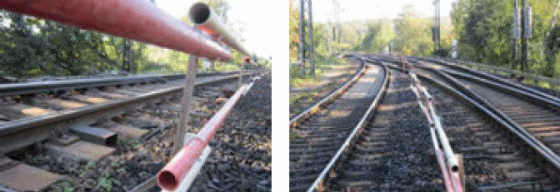
| Abb. 2-8: | Geeignete Feste Absperrungen können auch im Bereich von Weichenzungen montiert werden (links). Unterbrechungen der Feste Absperrungen in Weichenbereichen werden mit sichtbarer Abgrenzung kenntlich gemacht und während der Arbeiten z. B. mit Absperrposten gesichert (rechts). |
Der Einsatz von Baumaschinen im Arbeitsgleis ist vom FA-Einsatz getrennt zu planen. Eingegleiste Zweiwegebagger mit Heckschwenkradius 2000 mm können bei 4 m Gleisabstand eingesetzt werden, wenn die gemäß Betra erforderlichen Sicherungsmaßnahmen für den Bahnbetrieb im Nachbargleis durchgeführt sind, z. B. Ausschluss von Lü-Dora und Festlegung, dass eingegleiste Zweiwegebagger vor Zulassung einer Lü-Cäsar Grundstellung eingenommen haben müssen, der Zw-Bagger nimmt dann ab Mitte Arbeitsgleis max. 1645 mm in Anspruch [47]. Die maximale halbe Breite der Lü-Cäsar ab Achse Nachbargleis beträgt bei 4 m Gleisabstand 2,25 m, vgl. Abb. 2-6 und [47]. Bei 4 m Gleisabstand und mittig zwischen den Gleisen montierter FA überragt das Baggerheck bei einer Oberwagendrehung um 90° die FA nicht, Abb. 2-5, 2-6.
Ein Warnsystem-Hersteller hat eine FA mit integriertem automatischem Warnsystem entwickelt (System FALKON [48] mit Linienwarnsignalgebern). Das System wird bei geringem Abstand zwischen Arbeitsbereich und Betriebsgleis dicht neben der Grenzlinie montiert, d. h. im durch die aerodynamischen Kräfte bedingten Gleisbereich. Dabei ist der Bereich B des Regellichtraumprofils immer frei zu halten, vgl. Abb. 2-3. Die Beschäftigten müssen nach der Warnsignalabgabe von der FA in den Arbeitsbereich zurücktreten und den Bereich verlassen, in dem sie durch aerodynamische Kräfte gefährdet werden können. Der Einsatz bietet sich an bei beengten Platzverhältnissen wie z. B. beim Bau einer Tiefenentwässerung oder bei einer Brückensanierung, vgl. Abb. 2-9.
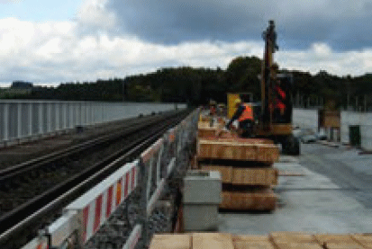
| Abb. 2-9: | Feste Absperrung mit integriertem automatischem Warnsystem bei beengten Platzverhältnissen (Sanierung der Fahrbahnplatte einer Brücke). Die Beschäftigten müssen den Arbeitsbereich unmittelbar neben der Festen Absperrung nach der Warnung verlassen. |
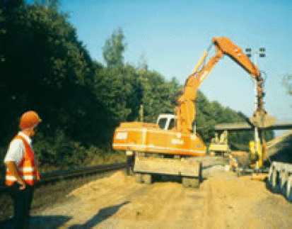
| Abb. 2-10: | Hier fehlt eine Feste Absperrung bei umfangreichen Tief- und Gleisbauarbeiten neben einem Betriebsgleis. Für die Bagger sind zusätzliche Sicherungsmaßnahmen erforderlich, um eine Gefährdung für den Bahnbetrieb auszuschließen. Die erforderlichen Sicherheitsmaßnahmen gegen Gefahren durch unter Spannung stehende Teile der Fahrleitung (vgl. Kap. 4) sind einzuhalten. |
Wenn eine Gleissperrung oder eine FA nicht eingesetzt werden können, ist ein automatisches Warnsystem die dem Stand der Technik entsprechende Maßnahme, deren funkbasierte Ausführung wegen des niedrigen Montageaufwands auch bei Arbeitsstellen geringen Umfangs im sicherheitstechnischen Sinn gerechtfertigt sein kann. Kollektiv wirkende sich selbst überwachende automatische Warnsysteme („fail-safe-Funktion“) mit akustischen Signalgebern und optischen Erinnerungsanzeigen können zur Warnung vor Fahrten im Arbeitsgleis oder im Nachbargleis, dann z. B. in Kombination mit der Sperrung des Arbeitsgleises, oder für Arbeitsbereiche neben Gleisanlagen eingesetzt werden (Abb. 2-12, 2-13). Bei Auslösung der Warnung über die am Beginn der Annäherungsstrecke montierten Schienenkontakte hat menschliches Handeln keinen Einfluss auf die Sicherheit von Fahrterkennung und Signalabgabe. Automatische Warnsysteme stehen daher in der Rangfolge vor der Postensicherung.
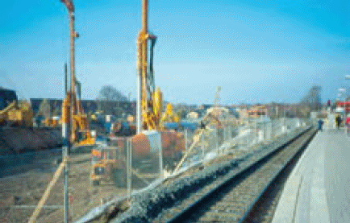
| Abb. 2-11: | Bauzaun als Feste Absperrung zwischen Arbeitsbereich und Gleisanlage. |
Auf gleisgebundenen oder nicht gleisgebundenen Maschinen können funkgesteuerte akustische Warnsignalgeber angebracht werden, um die Signale trotz hoher Maschinenstörschallpegel hörbar zu machen, Abb. 2-14 [44]. Die akustischen Warnsignale sind sicher wahrnehmbar, wenn sie im Nahbereich, d. h. 1 m neben der Maschine auf ganzer Maschinenlänge mindestens 3 dB(A) lauter sind als die Maschinengeräusche. Mindestens täglich vor Arbeitsbeginn ist eine Wahrnehmbarkeitsprobe (akustische Signale und optische Erinnerungsanzeigen) durchzuführen.
Der Auslösezeitpunkt und der Signalcharakter der Maschinenwarnanlage und der ortsfesten, feldseitig des Betriebsgleises stehenden Warnanlage müssen übereinstimmen.
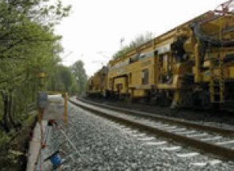
| Abb. 2-12: | Automatisches Warnsystem auf der Feldseite des Betriebsgleises zur Sicherung einer Planumsverbesserungsmaschine, deren Maschinenwarnanlage von der feldseitigen Warnsystemzentrale angesteuert wird. |
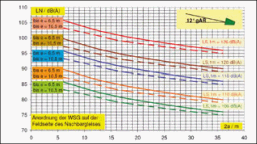
| Abb. 2-13: | Der Abstand 2a [m] der Warnsignalgeber (WSG) wird abhängig von Signalpegel LS,1m [dB(A)], Warngeberstandort (Abstand e [m] zwischen WSG-Kette und Achse Arbeitsgleis) und Störschallpegel LN [dB(A)] festgelegt [45]. Die Signalgeber werden im Winkel zwischen 0° und 30° (rechnerisch optimal 12°) zur Gleisachse und wenn möglich gegen die Arbeitsrichtung (gAR) ausgerichtet. |
Bettungsreinigungsmaschinen, Planumsverbesserungsmaschinen und Gleisumbauzüge, die bei der DB Netz AG eingesetzt werden, müssen seit 7/2011 mit bahntechnisch freigegebenen funkangesteuerten maschineneigenen automatischen Warnsystemen ausgerüstet sein und werden wegen der erforderlichen Vor- und Nacharbeiten immer zusammen mit ortsfesten Warnanlagen betrieben.
Die optischen Anzeigen automatischer Warnsysteme sind keine eigenständigen Warnsignale. Sie haben nur eine „Erinnerungsfunktion“, mit der nach der einmaligen akustischen Warnung (3 sec Dauer) angezeigt wird, dass sich die Fahrt noch im Arbeitsbereich oder in Annäherung auf diesen befindet, also die Arbeitsstelle noch nicht passiert hat. Der Verzicht auf die akustische Warnung nachts ist in Bereichen, in denen gearbeitet wird, nicht zugelassen. Auf die akustische Warnung kann nicht verzichtet werden, da wegen der wechselnden Lichtquellen aus Baustellenbeleuchtung, Maschinenbeleuchtung, Arbeitsverfahren und wegen der wechselnden Arbeitsbedingungen (Abwendung von der optischen Signalquelle, Körperhaltung, persönliche Schutzausrüstung) die optischen Signale allein in der Praxis niemals ausreichen. In allen Bereichen, in denen gearbeitet wird, ist daher nachts immer auch akustisch zu warnen [27].
Für den Einsatz automatischer Warnsysteme ist eine sorgfältige „akustische Planung“ erforderlich, bei der der vom Bauunternehmer anzugebende maximale Maschinenstörschallpegel (Anhang 6), der Signalpegel der Warnsignalgeber und der Abstand zwischen Warngeberkette und Arbeitsgleis berücksichtigt werden müssen, Abb. 2-13. Die Signalgeber sollen schräg zur Gleisachse abstrahlend aufgestellt werden (Winkel zwischen 0° und 30°, Optimum bei 12°), um im Arbeitsbereich eine möglichst hohe Signalpegelausbeute zu erreichen und gleichzeitig die Schallabstrahlung in die Umgebung zu minimieren. Signalgeber sind so aufzustellen, dass sich die Unterkante des Schalltrichters mindestens auf Höhe der Schotteroberkante befindet.
Bei Arbeiten mit lärmerzeugenden Maschinen muss Gehörschutz getragen werden, der für das Signalhören im Gleisbau geeignet ist (Bemerkung „S“ in der Positivliste des Instituts für Arbeitsschutz der Deutschen Gesetzlichen Unfallversicherung (IFA) der geprüften Gehörschützer [18]). Für die auf Gleisbaustellen Beschäftigten sind regelmäßig arbeitsmedizinische Vorsorgeuntersuchungen zum Erkennen und Vermeiden von Lärmerkrankungen und zur Überprüfung der Signalhörfähigkeit durchzuführen (Grundsatz G 20 „Lärm“).
Besteht die Gefahr, dass eine Maschine, z. B. ein Bagger, durch Fehlverhalten des Maschinenführers (Unachtsamkeit, Ablenkung, Konzentration auf die Arbeitsaufgabe) in ein Betriebsgleis hineinschwenkt, reicht „Warnung“ alleine nicht aus. Dann sind in Absprache mit der für den Bahnbetrieb zuständigen Stelle zusätzliche Sicherungsmaßnahmen erforderlich (z. B. eine Gleissperrung oder die Zulassung einer Fahrt erst dann, wenn die Maschine in die erforderliche Ruheposition gebracht ist).
Mit der Entwicklung von Funkwarnsystemen, die ergonomischen Anforderungen genügen, werden automatische Warnsysteme auch für kurzzeitige oder schnell wandernde Arbeitsstellen eingesetzt, Abb. 2-15. Auch diese Systeme sind grundsätzlich mit Schienenkontakten auszulösen. Der Einsatz von Außenposten mit Handfunksendern zur Erkennung der Zugfahrt und Auslösung der Warnung ist nur zulässig, wenn Einbau bzw. Umsetzen von Schienenkontakten sicherheitstechnisch nicht gerechtfertigt sind. Diese Entscheidung darf nur von der BzS getroffen werden. Bei Einsatz dieser Systeme für das nicht gesperrte Arbeitsgleis wird das Verhalten der Arbeitskräfte nach der Warnung gemäß UVV BGV D 33 [14] und GUV-V D 33 [15], § 5 (4) Nr. 4. durch den Innenposten überwacht, der bei unzureichender Reaktion der Arbeitskräfte das Warnsignal Ro 2 wiederholt oder Ro 3 gibt entsprechend der Festlegung durch die Sicherungsaufsicht. Die Arbeitsstelle darf dann nur so groß sein, dass ein Innenposten für die Überwachung des Verhaltens der Arbeitskräfte nach der Warnung ausreicht.
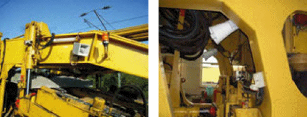
| Abb. 2-14: | Funkangesteuerte Warnsysteme auf Gleisbaumaschinen (links: Hersteller Schweizer Electronic AG, rechts: Hersteller Zöllner Signal GmbH). |
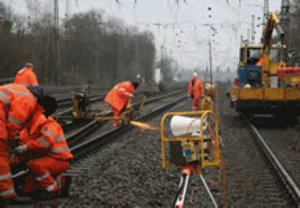
| Abb. 2-15: | Mobile funkangesteuerte Signalgeber für kleine oder schnell wandernde Arbeitsstellen (Foto: Zöllner Signal GmbH). Bei Arbeiten mit Funkenflug muss die Warnkleidung schwerentflammbar sein. |
Die Unfallverhütungsregelungen sehen als mögliche Sicherungsmaßnahme auch eine Benachrichtigung der Arbeitsstelle über Zug- und Rangierfahrten mit Bestätigung der Benachrichtigung vor Zulassung der Fahrt vor. Wird der Gleisbereich vor Zulassung der Fahrt verlassen, handelt es sich dabei um eine weitreichende, organisatorische Maßnahme.
Bei der DB wird das Verfahren „Benachrichtigen von Arbeitsstellen auf der freien Strecke“ genannt und ist landläufig als „Warnerverfahren“ bekannt [25]. Die Meldung der erfolgreichen Räumung als Voraussetzung für die Zulassung der Fahrt wird nicht verlangt. Das Verfahren kann für das nicht gesperrte Arbeitsgleis oder für das Nachbargleis angewendet werden. Entscheidend ist, dass die Arbeitsstelle stets nur so groß sein darf, dass für die Sicherung der Beschäftigten ein Innenposten ausreicht. In der Praxis ist deshalb die Längenausdehnung der Arbeitsstelle auf ca. 20 m bis 30 m beschränkt. Diese Regelung wurde in Anlehnung an eine Arbeitsstelle im nicht gesperrten Arbeitsgleis, die durch Sicherungsposten gewarnt wird, formuliert. An der Arbeitsstelle nimmt ein Meldeposten die Benachrichtigung entgegen und bestätigt diese in der Regel dem Fahrdienstleiter, der dann das die Arbeitsstelle deckende Signal auf Fahrt stellen darf. Die Beschäftigten werden an der Arbeitsstelle durch ein akustisches Signal gewarnt. Deshalb handelt es sich bei dem durch die DB gehandhabten Verfahren um eine hinweisende Sicherungsmaßnahme.
Wenn eine kleine Arbeitsstelle von bis zu drei Beschäftigten mit dieser Sicherungsmaßnahme gesichert wird ist Voraussetzung, dass diese in unmittelbarer Nähe zueinander arbeiten. Es wird dann kein Warnsignal gegeben und der Meldeposten informiert die Beschäftigten mündlich über die Fahrt.
Im Bereich der DB darf das Verfahren nicht in Bahnhöfen angewendet werden. Auch an der Arbeitsstelle müssen die betriebswichtigen Gespräche wie z. B. Beginn und Ende der Anwendung des Verfahrens sowie die Meldungen der Fahrten nachgewiesen werden, z. B. im Fernsprechbuch. Das Verfahren ist bei der DB im Modul 132.0118A03 [25] beschrieben.
Die BzS darf die Sicherung mit Sicherungsposten bzw. Sicherungspostenketten nur dann vorsehen, wenn Gleissperrung, FA oder andere technische Mittel wie automatische Warnsysteme nicht möglich oder sicherheitstechnisch nicht gerechtfertigt sind, vgl. 132.0118A01 [25]. Dies wäre nur dann der Fall, wenn das Zusatzrisiko durch den zusätzlichen Aufenthalt im Gleisbereich für Montage und Demontage von fester Absperrung oder automatischem Warnsystem größer ist als die Risikoverringerung durch diese technischen Sicherungssysteme. Bei Postensicherung ist das gesamte Verfahren (Fahrterkennung, Warnung und Räumung der Arbeitsstelle) vom jederzeit richtigen Handeln jedes Einzelnen aus der Postenkette bzw. aus der Arbeitskolonne abhängig. Gleichwohl wird die Postensicherung auch zukünftig insbesondere bei kleinen, kurzzeitigen oder schnell wandernden Arbeitsstellen eingesetzt werden.
Es ist zu erwarten, dass das klassische CO2-Tyfon dabei zunehmend von handtragbaren elektrischen Hörnern abgelöst wird (Abb. 2-16), die ergonomische Vorteile bieten und die Lärmbelastung des Sicherungspostens bei der Signalabgabe reduzieren. Bei der DB ist geplant, CO2-Tyfone ab 01.01.2014 nicht mehr einzusetzen.
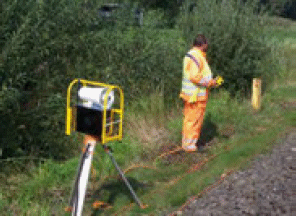
| Abb. 2-16: | Elektrisch fernbedienter Signalgeber. |
Um das Risiko durch Fehlhandlungen zu minimieren, bestehen bei Postensicherung für Arbeitsstellen in nicht gesperrten Gleisen gemäß GUV-V D 33 [15] § 4 (3) weitreichende Restriktionen: Es werden nur „kleine“ Arbeitsstellen (maximal ein Innenposten ausreichend, Räumzeit maximal 20 sec) und „kurze“ Postenketten (je Richtung ein Außen- und ein Zwischenposten) zugelassen. In der Regel muss das nicht gesperrte Arbeitsgleis auch bei Fahrten im Nachbargleis geräumt werden. Fernsprechverbindungen sind zur Übermittlung der Warnung nicht zugelassen, solange es keine technisch sichere, sich selbst überwachende Sprechfunkverbindung gibt. Zwischen Außen-, Zwischen- und Innenposten muss daher immer eine Sichtund Hörverbindung mit elektrischem Warnsignalgeber bzw. Tyfon bestehen.
Nachts ist eine Postensicherung, die Hör- und Sichtverbindung innerhalb der Postenkette erfordert, im Regelfall nicht möglich:
Bei Postensicherung müssen die Arbeitskräfte den Anweisungen des Sicherungspersonals folgen, soweit diese sicherungsrelevant sind. Z. B. dürfen die Arbeiten erst begonnen werden, wenn die Sicherungsaufsicht die Freigabe erteilt hat und sie müssen sofort beendet werden, wenn die Sicherungsposten dies verlangen, weil z. B. die Sichtverbindung wegen Nebel, Regen oder Schneefall unterbrochen ist oder die Hörbarkeit der Warnsignale aufgrund einer zusätzlich in Betrieb genommenen geräuschintensiven Maschine nicht mehr gegeben ist.
Absperrposten sollen nur dann eingesetzt werden, wenn die Prüfung durch die BzS ergeben hat, dass die vorrangigen Verfahren Gleissperrung, „FA“, „Warnung mit automatischem Warnsystem“, „Warnerverfahren“ und „Sicherungsposten“ nicht möglich oder sicherheitstechnisch nicht gerechtfertigt sind.
Wird von der BzS bei gesperrtem Arbeitsgleis zum Schutz vor dem Bahnbetrieb im Nachbargleis das Sicherungsverfahren „Absperrposten“ festgelegt, müssen die Voraussetzungen gemäß GUV-R 2150, 4.3 [16] erfüllt sein (u. a. Geschwindigkeit im Nachbargleis max. 160 km/h, Arbeiten nur außerhalb des Gleisbereichs, der mindestens mit 2,5 m angesetzt wird). Bei der Sicherung mit Absperrposten wird vor Zugfahrten nicht gewarnt.
Durch das Bauunternehmen müssen Einsatzorte und -zeiten der Arbeitsgruppen genau angegeben werden, damit die Sicherung so geplant werden kann, dass gewährleistet ist, dass sich alle Arbeitskräfte jederzeit im unmittelbaren Zugriffsbereich eines Absperrpostens befinden. Einem Absperrposten können im Regelfall maximal drei Arbeitskräfte zugeordnet werden, die unmittelbar örtlich zusammenhängend arbeiten. Abb. 2-17 zeigt zwei Beispiele, bei denen die Arbeitsaufgabe diese Voraussetzung erfüllt: Einsatz eines Absperrpostens für einen Beschäftigten an einem Kabelschacht außerhalb des Gleisbereichs und Einsatz eines Absperrpostens für das Messpersonal, das im gesperrten Arbeitsgleis mit der Stopfmaschine mitgeht. Da Absperrposten vor Zugfahrten nicht warnen, darf das Nachbargleis im Zuge der Messarbeiten nicht betreten werden.
Absperrposten werden für eigene Kolonnen des Bauunternehmens, für Nachunternehmer (z. B. Kampfmittelsondierung) sowie i. R. d. Verbundvergabe für vorauslaufende und nachlaufende Trupps des Auftraggebers eingesetzt und für vom Auftraggeber direkt beauftragte Unternehmen (z. B. für LST-Arbeiten, für den Einbau von Trennern). Die Voraussetzungen – Arbeiten nur außerhalb des Gleisbereichs, das Personal einer „Bauspitze“ bleibt örtlich eng zusammen – müssen immer erfüllt sein.
Bei „großen“ Baustellen (z. B. kontinuierlicher Schienenwechsel oder Weichenerneuerung) mit weit auseinander gezogenen Bauspitzen sowie Einzelpersonen, die sich zwischen den Bauspitzen bewegen (z. B. Aufsichtführende des Bauunternehmens, Bauüberwachung) und verschiedensten Bewegungen der Arbeitsgruppen und Maschinen innerhalb des Arbeitsbereichs ist der Einsatz von Absperrposten nicht möglich, da die ständige punktuelle Sicherung jedes Trupps und jedes sich einzeln bewegenden Beschäftigten mit Absperrposten nicht gewährleistet werden kann. Stellt der Unternehmer fest, dass das Sicherungsverfahren „Absperrposten“ für den erforderlichen Bauablauf ungeeignet ist, muss die BzS angesprochen werden, um eine Änderung des Sicherungsverfahrens zu erreichen.
Arbeiten mit Freischneidern können nicht durch Absperrposten gesichert werden, da ein Sicherheitsabstand von mindestens 15 m einzuhalten ist.
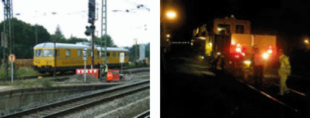
| Abb. 2-17: | Einsatz von Absperrposten für Arbeitsstellen, die örtlich eng begrenzt sind: Arbeiten am Kabelschacht (links) und Messtrupp hinter der Stopfmaschine (rechts). |
Zur Berücksichtigung der Rangfolge der Sicherungsverfahren müssen von der für den Bahnbetrieb zuständigen Stelle bei der Auswahl des Sicherungsverfahrens dem Arbeitsschutzgesetz entsprechend die folgenden Fragestellungen beachtet werden:
Die zweite Frage ist mittels einer Risikobewertung zu entscheiden, bei der der zusätzliche Aufenthalt im Gleisbereich (Montage und Demontage der festen Absperrung oder der Schienenkontakte und Signalgeber für ein automatisches Warnsystem) mit der Risikominderung durch den Einsatz des höherwertigen Sicherungssystems verglichen wird.
Die DB hat diese Vorgaben mit dem „formalisierten Verfahren zur risikominimalen Sicherung von Arbeitsstellen“ umgesetzt (Abb. 2-18 sowie RIMINI-Verfahren [25]). Dabei sind weitere Sicherungsmaßnahmen wie z. B. Zulassung der Fahrt nach Benachrichtigung und Bestätigung durch die Arbeitsstelle (Warnerverfahren), Absperrposten oder Handeinschaltung von automatischen Warnsystemen entsprechend ihrer Schutzwirkung in die Rangfolge integriert. Es darf nur dann eine niedrigere Stufe der Rangfolge vorgesehen werden, wenn alle höherwertigen Verfahren ungeeignet sind und dies mittels vorgesehener Ausschlusskriterien begründet und dokumentiert wird.
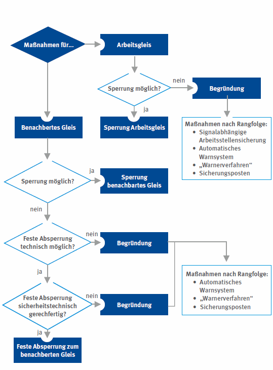
| Abb. 2-18: | Übersicht zur Festlegung der Sicherungsmaßnahmen nach dem Verfahren aus [25]. |